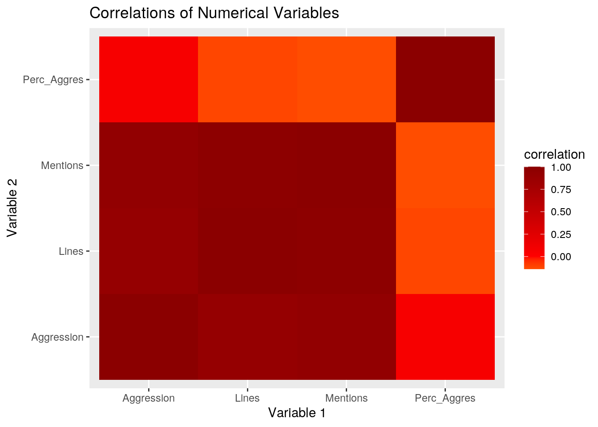
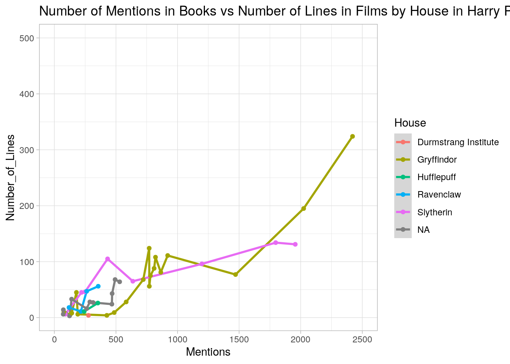
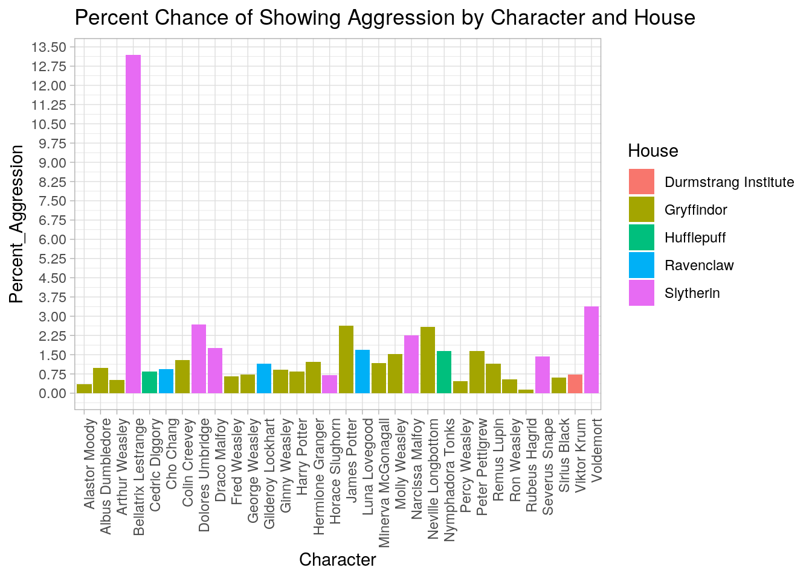
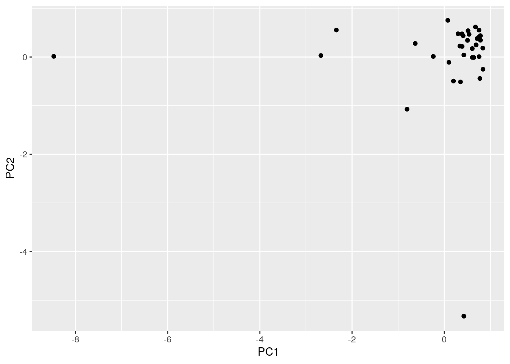
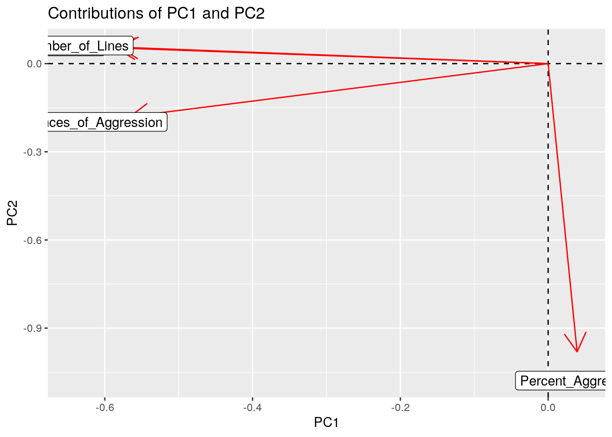

This is an R Markdown document. Markdown is a simple formatting syntax for authoring HTML, PDF, and MS Word documents. For more details on using R Markdown see http://rmarkdown.rstudio.com.
When you click the Knit button a document will be generated that includes both content as well as the output of any embedded R code chunks within the document. You can embed an R code chunk like this:
# Loading Data
Agression <- read.csv("Agression.csv", header = FALSE)
HPHouse <- read.csv("HPHouse.csv", header = FALSE,
na.strings = c("", "NA"))
SDS348_Project1 <- read.csv("SDS348_Project1.csv",
header = FALSE)
Book_Mentions <- SDS348_Project1
Film_Lines <- read.csv("Film_Lines.csv", header = FALSE)Introduction:
For my project, I chose to find datasets from the Harry Potter books and films. I was inspired after seeing a tweet about how the actor for Draco Malfoy was only present for less than 20 minutes of all eight movies. The Book_Mentions dataset contains a list of 100 characters and the number of times they were mentioned in all seven books. The Film_Lines dataset contains 50 characters and the number of lines they have in the films. The HP_House dataset had a list of 141 characters and the Hogwarts house they were placed in. There was a good amount of characters who did not have a house, whether because it was never stated in the books or because they did not attend Hogwarts. The last dataset was Instances_of_Aggression, which had a list of 104 characters who had at least one moment where they showed aggression and the number of times they exhibited an aggressive behavior. All the datasets were found online and compiled into spreadsheets by fans of the franchise. I then selected the specific datasets I was interested in determining the relationships for to use in my project. As a fan of Harry Potter myself, I was interested in the relationships I would find between each character's house, number of mentions in the books, number of lines in the films, and number of times they showed aggressiveness in the books. I expected to find a positive correlation between number of mentions in the book and number of lines in the films because the more important a character is to the plot of the books, the more likely they would be important to the plot of the movies. I also expected to find that characters who were in the Slytherin house would have a greater number of instances of aggression since Slytherin characters were more known for having aggressive traits.
# Making data tidy
library(tidyverse)
Book_Mentions <- Book_Mentions[-c(1), ] #needed to remove an empty first row
Book_Mentions <- Book_Mentions %>% rename(Character = V1,
Mentions = V2)
nrow(Book_Mentions)## [1] 100Aggression <- Agression[-c(1), ]
Aggression <- Agression %>% rename(Character = V1,
Instances_of_Aggression = V2)
nrow(Aggression)## [1] 104Film_Lines <- Film_Lines[-c(3, 4, 5)]
Film_Lines <- Film_Lines[-c(51:86), ]
Film_Lines <- Film_Lines %>% rename(Number_of_Lines = V1,
Character = V2)
nrow(Film_Lines)## [1] 50HPHouse <- HPHouse %>% rename(Character = V1, House = V2)
HP_House <- HPHouse[-c(143:507), ]
nrow(HP_House)## [1] 142# Joining the data, using left_join so that
# everything is joined by book mentions
pt1 <- left_join(Book_Mentions, HP_House, by = "Character")
nrow(pt1)## [1] 102pt2 <- left_join(pt1, Film_Lines, by = "Character")
nrow(pt2)## [1] 102joined <- left_join(pt2, Aggression, by = "Character") %>%
glimpse()## Rows: 102
## Columns: 5
## $ Character <fct> Harry Potter, Ron Weasley, Hermione Granger, …
## $ Mentions <fct> "18,956", "6,464", "5,486", "2,421", "1,956",…
## $ House <fct> Gryffindor, Gryffindor, Gryffindor, Gryffindo…
## $ Number_of_Lines <int> 1540, 728, 682, 324, 131, 134, 195, 96, 111, …
## $ Instances_of_Aggression <int> 160, 35, 67, 24, 28, 61, 3, 21, 6, 6, 7, 9, 9…head(joined)## Character Mentions House Number_of_Lines Instances_of_Aggression
## 1 Harry Potter 18,956 Gryffindor 1540 160
## 2 Ron Weasley 6,464 Gryffindor 728 35
## 3 Hermione Granger 5,486 Gryffindor 682 67
## 4 Albus Dumbledore 2,421 Gryffindor 324 24
## 5 Severus Snape 1,956 Slytherin 131 28
## 6 Voldemort 1,797 Slytherin 134 61# There were 103 rows but Book_Mentions dataset
# only had 100 distinct characters
final_joined <- unique(joined)
final_joined$Mentions <- gsub(",", "", final_joined$Mentions)
head(final_joined)## Character Mentions House Number_of_Lines Instances_of_Aggression
## 1 Harry Potter 18956 Gryffindor 1540 160
## 2 Ron Weasley 6464 Gryffindor 728 35
## 3 Hermione Granger 5486 Gryffindor 682 67
## 4 Albus Dumbledore 2421 Gryffindor 324 24
## 5 Severus Snape 1956 Slytherin 131 28
## 6 Voldemort 1797 Slytherin 134 61# Showing use of pivot_wider and pivot_longer
wide <- final_joined %>% pivot_wider(1, names_from = "Character",
values_from = "Instances_of_Aggression") %>% arrange()
head(wide)## # A tibble: 1 x 100
## `Harry Potter` `Ron Weasley` `Hermione Grang… `Albus Dumbledo… `Severus Snape`
## <int> <int> <int> <int> <int>
## 1 160 35 67 24 28
## # … with 95 more variables: Voldemort <int>, `Rubeus Hagrid` <int>, `Draco
## # Malfoy` <int>, `Fred Weasley` <int>, `George Weasley` <int>, `Ginny
## # Weasley` <int>, `Sirius Black` <int>, `Minerva McGonagall` <int>, `Neville
## # Longbottom` <int>, `James Potter` <int>, `Lily Potter` <int>, `Remus
## # Lupin` <int>, `Luna Lovegood` <int>, `Lucius Malfoy` <int>, `Molly
## # Weasley` <int>, `Bellatrix Lestrange` <int>, `Peter Pettigrew` <int>,
## # `Percy Weasley` <int>, `Arthur Weasley` <int>, `Alastor Moody` <int>,
## # `Cedric Diggory` <int>, `Katie Bell` <int>, Dobby <int>, `Bill
## # Weasley` <int>, `Cho Chang` <int>, `Dudley Dursley` <int>, `Viktor
## # Krum` <int>, `Dolores Umbridge` <int>, `Gregory Goyle` <int>, `Fleur
## # Delacour` <int>, `Vincent Crabbe` <int>, `Filius Flitwick` <int>, `Charlie
## # Weasley` <int>, `Petunia Dursley` <int>, `Nymphadora Tonks` <int>, `Vernon
## # Dursley` <int>, `Seamus Finnigan` <int>, Hedwig <int>, `Dean Thomas` <int>,
## # `Gilderoy Lockhart` <int>, `Cornelius Fudge` <int>, `Quirinus
## # Quirrell` <int>, `Sybill Trelawney` <int>, `Nearly Headless Nick` <int>,
## # `Narcissa Malfoy` <int>, `Barty Crouch Sr` <int>, `Oliver Wood` <int>,
## # `Parvati Patil` <int>, `Horace Slughorn` <int>, `Argus Filch` <int>,
## # `Godric Gryffindor` <int>, `Lavender Brown` <int>, `Pomona Sprout` <int>,
## # `Salazar Slytherin` <int>, `Kingsley Shacklebolt` <int>, `Garrick
## # Ollivander` <int>, Peeves <int>, Crookshanks <int>, `Moaning Myrtle` <int>,
## # Kreacher <int>, `Rita Skeeter` <int>, `Angelina Johnson` <int>, `Colin
## # Creevey` <int>, `Xenophilius Lovegood` <int>, `Poppy Pomfrey` <int>, `Pansy
## # Parkinson` <int>, `Aberforth Dumbledore` <int>, `Igor Karkaroff` <int>,
## # Buckbeak <int>, `Lee Jordan` <int>, `Rufus Scrimgeour` <int>, `Olympe
## # Maxime` <int>, Winky <int>, `Fenrir Greyback` <int>, `Mundungus
## # Fletcher` <int>, Fang <int>, `Gellert Grindelwald` <int>, `Bathilda
## # Bagshot` <int>, Firenze <int>, `Marge Dursley` <int>, `Ludo Bagman` <int>,
## # `Amos Diggory` <int>, Griphook <int>, `The Fat Lady` <int>, `Frank
## # Bryce` <int>, `Ernie MacMillan` <int>, `Cormac McLaggen` <int>, `Stan
## # Shunpike` <int>, Grawp <int>, `Marvolo Gaunt` <int>, Fawkes <int>, `Elphias
## # Doge` <int>, `Phineas Nigellus Black` <int>, `Bob Ogden` <int>, `Morfin
## # Gaunt` <int>ncol(wide)## [1] 100long <- wide %>% pivot_longer(1:100, names_to = "Character",
values_to = "Instances_of_Aggression")
head(long)## # A tibble: 6 x 2
## Character Instances_of_Aggression
## <chr> <int>
## 1 Harry Potter 160
## 2 Ron Weasley 35
## 3 Hermione Granger 67
## 4 Albus Dumbledore 24
## 5 Severus Snape 28
## 6 Voldemort 61Book_Mentions had 100 observations, Aggression had 105 observations, Film_Lines had 50 observations, and HP_House had 142 observations. I decided to use left_join to join all the datasets to Book_Mentions so that they would match the 100 most frequently mentioned characters in the books. I did this to base my project off of the original work. In addition, the Aggression dataset contained several unnamed characters who had some sort of aggressive action, and I did not want these very minor, one-time characters to clutter my data. HP_House also had 42 extra characters who were removed so that the 100 most mentioned characters were all I looked at. The only potential problem with removing these characters is just that minor characters or characters only present for a short amount of time in the books will be excluded. Any characters that may have been added to the movies will not be present. After viewing the Aggression dataset, I saw that several of the main characters, like Harry Potter and Hermione Granger, had a higher number of aggressive actions than the antagonists of the series, such as Voldemort. Since a higher number of mentions could cause the instances of aggression to also be high, this could make these characters seem more aggressive than they actually are.
# Summary statistics Making sure numeric variables
# are numeric
final_joined$Instances_of_Aggression <- as.numeric(final_joined$Instances_of_Aggression)
final_joined$Mentions <- as.numeric(final_joined$Mentions,
na.rm = T)
final_joined$Number_of_Lines <- as.numeric(final_joined$Number_of_Lines)
sapply(final_joined, class)## Character Mentions House
## "factor" "numeric" "factor"
## Number_of_Lines Instances_of_Aggression
## "numeric" "numeric"# Making a new column for proportion of aggression
# actions divided by number of mentions in the book
# to find proportion of time a character is going
# to be aggressive if mentioned. That way,
# characters like Harry Potter don't appear more
# aggressive than characters like Voldemort just
# because they are mentioned more.
prop_agg <- final_joined %>% mutate(Percent_Aggression = Instances_of_Aggression/Mentions *
100)
prop_agg %>% arrange(desc(Percent_Aggression))## Character Mentions House Number_of_Lines
## 1 Bellatrix Lestrange 220 Slytherin 45
## 2 Aberforth Dumbledore 79 Ravenclaw NA
## 3 Fawkes 64 <NA> NA
## 4 Quirinus Quirrell 122 Ravenclaw NA
## 5 Amos Diggory 76 Hufflepuff NA
## 6 Kingsley Shacklebolt 106 Gryffindor NA
## 7 Voldemort 1797 Slytherin 134
## 8 Filius Flitwick 140 Ravenclaw NA
## 9 Vincent Crabbe 224 Slytherin NA
## 10 Dolores Umbridge 637 Slytherin 65
## 11 James Potter 190 Gryffindor 6
## 12 Neville Longbottom 810 Gryffindor 88
## 13 Parvati Patil 133 Gryffindor NA
## 14 Narcissa Malfoy 89 Slytherin 6
## 15 Draco Malfoy 1198 Slytherin 96
## 16 Luna Lovegood 356 Ravenclaw 56
## Instances_of_Aggression Percent_Aggression
## 1 29 13.181818
## 2 4 5.063291
## 3 3 4.687500
## 4 5 4.098361
## 5 3 3.947368
## 6 4 3.773585
## 7 61 3.394546
## 8 4 2.857143
## 9 6 2.678571
## 10 17 2.668760
## 11 5 2.631579
## 12 21 2.592593
## 13 3 2.255639
## 14 2 2.247191
## 15 21 1.752922
## 16 6 1.685393
## [ reached 'max' / getOption("max.print") -- omitted 84 rows ]head(prop_agg)## Character Mentions House Number_of_Lines Instances_of_Aggression
## 1 Harry Potter 18956 Gryffindor 1540 160
## 2 Ron Weasley 6464 Gryffindor 728 35
## 3 Hermione Granger 5486 Gryffindor 682 67
## 4 Albus Dumbledore 2421 Gryffindor 324 24
## 5 Severus Snape 1956 Slytherin 131 28
## 6 Voldemort 1797 Slytherin 134 61
## Percent_Aggression
## 1 0.8440599
## 2 0.5414604
## 3 1.2212906
## 4 0.9913259
## 5 1.4314928
## 6 3.3945465# Number of times a character from each house is
# mentioned
Mentions_by_house <- prop_agg %>% group_by(House) %>%
summarize(Mean_Number_of_Mentions = mean(Mentions))
head(Mentions_by_house)## # A tibble: 6 x 2
## House Mean_Number_of_Mentions
## <fct> <dbl>
## 1 Durmstrang Institute 221
## 2 Gryffindor 1461.
## 3 Hufflepuff 163.
## 4 Ravenclaw 176.
## 5 Slytherin 563.
## 6 <NA> 183.# Mean number of aggressive actions done by
# characters summarized by their house
Aggression_by_House <- prop_agg %>% select(House, Instances_of_Aggression) %>%
group_by(House) %>% summarize(mean(Instances_of_Aggression,
na.rm = T))
head(Aggression_by_House)## # A tibble: 6 x 2
## House `mean(Instances_of_Aggression, na.rm = T)`
## <fct> <dbl>
## 1 Durmstrang Institute 2
## 2 Gryffindor 17.4
## 3 Hufflepuff 3.33
## 4 Ravenclaw 4
## 5 Slytherin 18.7
## 6 <NA> 2.2# What percent of the time should we expect an
# aggressive action by a character depending on
# which house they are in
Prop_aggression_by_house <- prop_agg %>% group_by(House) %>%
summarize(Percent_Aggression = mean(Percent_Aggression,
na.rm = T))
head(Prop_aggression_by_house)## # A tibble: 6 x 2
## House Percent_Aggression
## <fct> <dbl>
## 1 Durmstrang Institute 0.722
## 2 Gryffindor 1.21
## 3 Hufflepuff 2.15
## 4 Ravenclaw 2.63
## 5 Slytherin 3.19
## 6 <NA> 1.42# I wanted to know more information specifically
# about the Weasley Family
prop_agg %>% filter(str_detect(Character, "Weasley")) %>%
filter(str_detect(House, "Gryffindor"))## Character Mentions House Number_of_Lines Instances_of_Aggression
## 1 Ron Weasley 6464 Gryffindor 728 35
## 2 Fred Weasley 920 Gryffindor 111 6
## 3 George Weasley 821 Gryffindor 108 6
## 4 Ginny Weasley 771 Gryffindor 56 7
## 5 Molly Weasley 722 Gryffindor 68 11
## 6 Percy Weasley 426 Gryffindor 4 2
## 7 Arthur Weasley 780 Gryffindor 75 4
## 8 Charlie Weasley 110 Gryffindor NA NA
## Percent_Aggression
## 1 0.5414604
## 2 0.6521739
## 3 0.7308161
## 4 0.9079118
## 5 1.5235457
## 6 0.4694836
## 7 0.5128205
## 8 NAWeasley_Totals <- prop_agg %>% filter(str_detect(Character,
"Weasley")) %>% filter(str_detect(House, "Gryffindor")) %>%
summarize(`Mean Mentions` = mean(Mentions), `Mean Percent Aggression` = mean(Percent_Aggression,
na.rm = T), `Mean Lines` = mean(Number_of_Lines,
na.rm = T), `Mean Instances of Aggression` = mean(Instances_of_Aggression,
na.rm = T))
Weasley_Totals## Mean Mentions Mean Percent Aggression Mean Lines Mean Instances of Aggression
## 1 1376.75 0.7626017 164.2857 10.14286# Now I want to find the mean statistics for each
# of the Houses
Means_byHouse_na <- prop_agg %>% group_by(House) %>%
summarize(`Mean Mentions` = mean(Mentions, na.rm = T),
`Mean Lines` = mean(Number_of_Lines, na.rm = T),
`Mean Aggression Instances` = mean(Instances_of_Aggression,
na.rm = T), `Mean Percent Aggression` = mean(Percent_Aggression,
na.rm = T))
Means_byHouse <- na.omit(Means_byHouse_na)
head(Means_byHouse)## # A tibble: 5 x 5
## House `Mean Mentions` `Mean Lines` `Mean Aggression I… `Mean Percent Agg…
## <fct> <dbl> <dbl> <dbl> <dbl>
## 1 Durmstran… 221 4 2 0.722
## 2 Gryffindor 1461. 199. 17.4 1.21
## 3 Hufflepuff 163. 18.5 3.33 2.15
## 4 Ravenclaw 176. 33 4 2.63
## 5 Slytherin 563. 78.5 18.7 3.19# Next, I wanted to see the standard deviations for
# each house
sd_byHouse_na <- prop_agg %>% group_by(House) %>% summarize(`SD Mentions` = sd(Mentions,
na.rm = T), `SD Lines` = sd(Number_of_Lines, na.rm = T),
`SD Aggression Instances` = sd(Instances_of_Aggression,
na.rm = T), `SD Percent Aggression` = sd(Percent_Aggression,
na.rm = T))
sd_byHouse <- na.omit(sd_byHouse_na)
head(sd_byHouse)## # A tibble: 4 x 5
## House `SD Mentions` `SD Lines` `SD Aggression Instan… `SD Percent Aggress…
## <fct> <dbl> <dbl> <dbl> <dbl>
## 1 Gryffind… 3507. 360. 34.4 0.868
## 2 Hufflepu… 114. 10.6 0.577 1.61
## 3 Ravenclaw 93.9 21.9 1.41 1.68
## 4 Slytherin 659. 45.5 19.3 3.86# Then I joined the data on mean and standard
# deviation to make one table
Stats_by_House <- merge(Means_byHouse, sd_byHouse)
Stats_by_House## House Mean Mentions Mean Lines Mean Aggression Instances
## 1 Gryffindor 1461.0625 198.7273 17.391304
## 2 Hufflepuff 163.1667 18.5000 3.333333
## 3 Ravenclaw 176.2500 33.0000 4.000000
## 4 Slytherin 562.6923 78.5000 18.666667
## Mean Percent Aggression SD Mentions SD Lines SD Aggression Instances
## 1 1.212315 3507.1833 359.69460 34.3983868
## 2 2.150040 114.4455 10.60660 0.5773503
## 3 2.629910 93.8597 21.86321 1.4142136
## 4 3.192224 659.4355 45.45327 19.3326149
## SD Percent Aggression
## 1 0.8683106
## 2 1.6074852
## 3 1.6801896
## 4 3.8565600# I was also curious which character had the most
# instances of aggression and which character had
# the highest proportion of aggressive actions
# based on how often the character was mentioned
# (percent aggression) Max aggression instances &
# proportion
prop_agg %>% select(Character, Instances_of_Aggression) %>%
slice(which.max(Instances_of_Aggression)) #Harry Potter was aggressive most number of times## Character Instances_of_Aggression
## 1 Harry Potter 160prop_agg %>% select(Character, Percent_Aggression) %>%
slice(which.max(Percent_Aggression)) #Bellatrix had highest percent chance of being aggressive when mentioned## Character Percent_Aggression
## 1 Bellatrix Lestrange 13.18182# Then I wanted to find the opposite Min aggression
# instances & proportion
prop_agg %>% select(Character, Percent_Aggression) %>%
slice(which.min(Percent_Aggression)) #Hagrid## Character Percent_Aggression
## 1 Rubeus Hagrid 0.1482213# Correlation matrix for numerical data
nums <- prop_agg %>% rename(Lines = Number_of_Lines,
Aggression = Instances_of_Aggression, Perc_Aggres = Percent_Aggression)
proj_nums <- nums %>% column_to_rownames("Character") %>%
select_if(is.numeric, na.rm = T) %>% cor(use = "pair")First, I made a new variable called Percent_Aggression, which was calculated by dividing the instances of aggression by the number of mentions and multiplying by 100. The result is a new column that gives the percent chance any given character will show aggressiveness if mentioned. Now, characters do not appear to be more aggressive just because the story is focused around them. Next, I grouped all the characters by house to find the mean percent of the time we would expect a character from each house to show aggressiveness. Characters who were not specified as being in a house or who did not attend Hogwarts did not have a house, and characters from the Durmstrang school were grouped together. Students from Slytherin had the highest percent chance of showing aggression when mentioned with 3.19%, while Durmstrang students showed the least likeliness of being aggressive with 0.72%. Next, I was interested in studying the members of the Weasley family who were also in the Gryffindor house and made a table showing the mean number of lines, number of mentions, number of instances of aggression, and the mean percent aggression for this subset of characters. Then, I made a table of the means and standard deviations of each numeric variable grouped by house. Anyone not in one of the four main houses was placed in one group since these tended to be minor characters. Gryffindors and Slytherins tended to be the highest means across the variables, and Gryffindor tended to have the highest standard deviation, most likely because Gryffindors outside the main characters had much lower stats. Harry Potter had the highest number of aggressive actions with 160 instances, but Bellatrix Lestrange had the highest percent chance of showing aggressiveness with 13.2%. Many characters had only 1 aggressive incident, so I did not calculate that statistic. Hagrid had the lowest percent chance of showing aggression with 0.148%. Lastly, I found the correlations between all numeric variables to help determine their relationships to each other.
# Visualizing Data
# Correlation Heatmap
proj_matrix <- proj_nums %>% as.data.frame %>% rownames_to_column("Variable 1") %>%
pivot_longer(-1, names_to = "Variable 2", values_to = "correlation")
proj_matrix %>% ggplot(aes(`Variable 1`, `Variable 2`,
fill = correlation)) + geom_tile() + scale_fill_gradient2(low = "yellow",
mid = "red", high = "dark red") + ggtitle("Correlations of Numerical Variables")
# High cor between mentions, incidents of
# aggression and lines but interestingly not
# between percent aggression and instances of
# aggression
# Graph 1 I adjusted the x and y limits to exclude
# some of the outliers, who were all Gryffindor, so
# that the rest of the data could be seen. Even
# still, Gryffindors and Slytherins had far more
# mentions and lines.
library(ggplot2)
plot1 <- as.data.frame(prop_agg)
ggplot(data = plot1, aes(x = Mentions, y = Number_of_Lines,
color = House)) + ggtitle("Number of Mentions in Books vs Number of Lines in Films by House in Harry Potter") +
geom_smooth(method = "lm", aes(group = House, color = House),
stat = "summary") + geom_point(aes(group = House)) +
xlim(1, 2500) + ylim(1, 500) + theme_light()
# Graph 2- figure out how to manually change
# colors???
plot2 <- prop_agg %>% na.omit(Percent_Aggression)
ggplot(data = plot2, aes(x = Character, y = Percent_Aggression,
fill = House)) + geom_bar(stat = "summary") + theme_light() +
scale_y_continuous(breaks = seq(0, 15, by = 0.75)) +
theme(axis.text.x = element_text(angle = 90, hjust = 1)) +
ggtitle("Percent Chance of Showing Aggression by Character and House")
# I removed any characters who did not show any
# aggressivenessThe correlation heatmap showed the various correlations between the four numerical variables: the number of times a character was mentioned in the books, the number of lines each character had in the films, the number of aggressive instances each character showed in the books, and the percent chance a character would show aggression if mentioned. There was a high correlation (between 0.75 and 1.0) between the number of aggressive instances, the number of times a character was mentioned in the books, and the number of lines a character had in the films. This makes sense because characters who were important to the books would be mentioned a lot and also have a prominent role in the films. In addition, the more prominent a character is, the more times we would see them showing aggression. However, the percent aggression variable had a correlation between 0.0 and 0.25 with each of the variables. There was a slightly higher correlation between percent aggression and aggressive instances than between percent aggression and the other two numerical variables, showing that the main characters were likely not the most aggressive characters. The line graph showed the relationship between the number of times a character was mentioned in the books and the number lines a character had in the movies broken down by House. Characters noted as having NA for their house are any characters who attended Hogwarts but whose house was unknown or who did not have magic. In addition, there were several Gryffindor data points that skewed the graph so much that is caused the rest of the data to not be seen. As a result, I adjusted the x and y limits of the graph to allow for visualization of the rest of the data. Even so, Gryffindor characters were both mentioned more and had more lines in the films, with Slytherin as the second highest in both, and the rest of the characters were present much less. When this data is grouped by house, there is still a positive correlation between the two variables, although there may be more variance. The bar graph shows individual characters and their percent chance of exhibiting aggressiveness if mentioned. The bars are also colored by house. I excluded characters who showed 0 instances of aggression, who as a result had 0% chance of exhibiting aggression, to allow the more aggressive characters to be seen more clearly. While the two largest percentages were for Slytherin characters, the house with the highest number of aggressive characters was Gryffindor. There was only one Durmstrang student on the graph, but there were not many Durmstrang students present throughout the books. There were also only two Hufflepuff and three Ravenclaw students shown on the graph.
# PCA
# Preparing the data
prop_agg %>% select(-c(Character, House)) %>% cor(use = "pair")## Mentions Number_of_Lines Instances_of_Aggression
## Mentions 1.0000000 0.9813041 0.93153789
## Number_of_Lines 0.9813041 1.0000000 0.90723237
## Instances_of_Aggression 0.9315379 0.9072324 1.00000000
## Percent_Aggression -0.1383549 -0.1153508 0.06367623
## Percent_Aggression
## Mentions -0.13835487
## Number_of_Lines -0.11535076
## Instances_of_Aggression 0.06367623
## Percent_Aggression 1.00000000# Computing PC scores
mypca <- prop_agg %>% select(-c(Character, House)) %>%
na.omit() %>% scale() %>% prcomp()
mypca## Standard deviations (1, .., p=4):
## [1] 1.6971690 1.0162818 0.2652463 0.1281914
##
## Rotation (n x k) = (4 x 4):
## PC1 PC2 PC3 PC4
## Mentions -0.58432122 0.05334951 -0.2291761 -0.77666006
## Number_of_Lines -0.58026117 0.05595228 -0.5461574 0.60156329
## Instances_of_Aggression -0.56597740 -0.18032733 0.7835484 0.18221825
## Percent_Aggression 0.03918257 -0.98056373 -0.1877291 -0.04143997# Choosing number of PCs to keep Picking until
# cumulative proportion of variance is greater than
# 80%
summary(mypca)## Importance of components:
## PC1 PC2 PC3 PC4
## Standard deviation 1.6972 1.0163 0.26525 0.12819
## Proportion of Variance 0.7201 0.2582 0.01759 0.00411
## Cumulative Proportion 0.7201 0.9783 0.99589 1.00000# Giving correlation matrix to eigen
pca2 <- prop_agg %>% select(-c(Character, House)) %>%
cor(use = "pair") %>% eigen()
pca2## eigen() decomposition
## $values
## [1] 2.88699557 1.01947096 0.07954341 0.01399006
##
## $vectors
## [,1] [,2] [,3] [,4]
## [1,] -0.58452220 0.04142817 0.2020199 0.78473274
## [2,] -0.57925922 0.02291668 0.5722939 -0.58001149
## [3,] -0.56505575 -0.16948052 -0.7793154 -0.21131927
## [4,] 0.05919933 -0.98439570 0.1559974 0.05590496# Plotting scores to show data with respect to PC1
# and PC2
mypca$x %>% as.data.frame %>% ggplot(aes(PC1, PC2)) +
geom_point()
# Plot of which variables contribute to which PCs
mypca$rotation[, 1:2] %>% as.data.frame %>% rownames_to_column %>%
ggplot() + geom_hline(aes(yintercept = 0), lty = 2) +
geom_vline(aes(xintercept = 0), lty = 2) + ylab("PC2") +
xlab("PC1") + geom_segment(aes(x = 0, y = 0, xend = PC1,
yend = PC2), arrow = arrow(), col = "red") + geom_label(aes(x = PC1 *
1.1, y = PC2 * 1.1, label = rowname)) + ggtitle("Contributions of PC1 and PC2")
# Mentions seems to be hidden behind number of
# lines. They are very similar to each otherAll relevant steps discussed in class. Visualization of clusters or the first few PCs using ggplot, supporting paragraph or two explaining the results found.
To perform PCA, the data is first prepared by selecting all the numeric variables. 72.01% of the variance is accounted for by PC1, and 97.83% of the variance is accounted for by both PC1 and PC2. Since the cumulative proportion of variance is greater than 80% at PC2, the necessary number of PCs to select is two. The scatterplot shows the data with respect to PC1 and PC2 and shows a few outliers. The plot showing the contributions of PC1 and PC2 show that PC1 mostly explains the the percent chance a character will show aggression while mentioned, while PC2 mostly explains the instances of aggression of a character as written in the books, the number of times a character was mentioned in the books, and the number of lines a character had in the films.The arrow for Mentions seems to be behind the one for Number of Lines because they are very closely correlated.
Note that the echo = FALSE parameter was added to the code chunk to prevent printing of the R code that generated the plot.